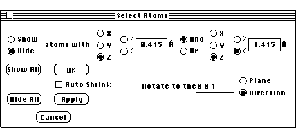
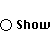
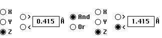
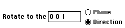

Distributed By: Virtual Labs
Select Atoms Dialog Box:
PATH...{Real Lattice}:Info Menu::Slice Lattice...
Desktop Microscopist lets the user view sections (planes) of a lattice when
either the 8 unit cell, 64 unit cell or crystal shape display has been plotted.
This section, once selected, may be rotated and viewed from any orientation.

Select Atoms Dialog Box
To select a section, go to the Lattice Menu and select the .i.Real Lattice:Slice
Lattice; item. This activates the .i.Real Lattice:Select Atoms; dialog box.
The Select Atoms dialog works by either hiding or showing an iterative selection
of atoms. Thus, if all the atoms are initially hidden, defining a selection
range and then clicking on the Apply button with the Show radio button active
will show all the atoms which meet the defined selection criteria. Additional
atoms may be added by changing the selection criteria and again clicking
on the Apply button.
The utilization of this dialog box provides a method of specifying any grouping
of atoms from the initial lattice.
 When this radio button is active, all atoms which meet
the selection criteria will be displayed when the Apply button is activated.
Atoms which are currently displayed but do not meet the selection criteria
will not be hidden..i.Real Lattice:Select Atoms Dialog:Show;
When this radio button is active, all atoms which meet
the selection criteria will be hidden when the Apply button is activated.Real
Lattice:Select Atoms Dialog:Hide

This set of options sets the logic for selecting the atoms to be hidden
or displayed. .i.Real Lattice:Select Atoms Dialog:Selection Criteria;
- The z direction is perpendicular to the plane of the screen so that
the effected atom planes are parallel to the screen face. These atom planes
will be effected by the Z criteria.
- The x direction is horizontal and within the plane of the screen.
Atoms in the vertical plane extending orthogonally to the screen face are
effected by the X criteria.
- The y direction is vertical and within the plane of the screen. Atoms
in the horizontal plane extending orthogonally to the screen face are effected
by the Y criteria.
- These controls allow the specification of apertures for the inclusion
or exclusion of atoms for display. These apertures in conjunction with the
rotational capabilities of the Real Lattice provide the mechanism for the
display of any set of atomic planes.

The rotate controls pictured above provide the ability rotate the lattice
into a desired orientation for subsequent selections. This rotation occurs
from within the dialog box. .i.Real Lattice:Select Atoms Dialog:Rotation;
Note: The x, y and z axes used for specifying the atoms to be displayed
are screen relative. Rotation of the lattice causes these axes to align
with different crystallographic directions.
- Clicking on the .i.Real Lattice:Select Atoms Dialog:Auto Shrink; button
will cause the dialog box to shrink to a very small size after an operation
which effects the display of the lattice. This shrinking allows the results
of the operation to be fully viewed. Clicking on the grow box will restore
the dialog to its original configuration.
- The .i.Real Lattice:Select Atoms Dialog:Show All; and .i.Real Lattice:Select
Atoms Dialog:Hide All; buttons do as they indicate. Use them to reset the
crystal so that the show and hide radio buttons are effective.
- The OK button retains the changes made to the dialog box while the
Cancel button restores the displayed lattice without any hidden atoms.
Author: J.ames T.
Stanley
 Desktop
Manual:Dialog Boxes
Desktop
Manual:Dialog Boxes
Distributed By: Virtual Labs
Last Updated:1/12/96 Sat, Apr 27, 1996